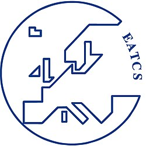

This article includes a list of general references but lacks sufficient corresponding inline citations. (January 2011) |
{kind=link}

The European Association for Theoretical Computer Science (EATCS[1]) is an international organization with a European focus, founded in 1972. Its aim is to facilitate the exchange of ideas and results among theoretical computer scientists as well as to stimulate cooperation between the theoretical and the practical community in computer science.
The major activities of the EATCS are:
- Organization of ICALP, the International Colloquium on Automata, Languages and Programming;[2]
- Publication of the Bulletin of the EATCS;
- Publication of a series of monographs[3][4] and texts[5] on theoretical computer science;
- Publication of the journal Theoretical Computer Science;[2]
- Publication of the journal Fundamenta Informaticae.
EATCS Award
Each year, the EATCS Award[6] is awarded in recognition of a distinguished career in theoretical computer science. The first award was assigned to Richard Karp in 2000; the complete list of the winners is given below:
| Year | Awarded | Place |
|---|---|---|
| 2025 | Rajeev Alur | ICALP (Aarhus) |
| 2024 | Samson Abramsky | ICALP (Tallinn) |
| 2023 | Amos Fiat | ICALP (Paderborn) |
| 2022 | Patrick Cousot | ICALP (Paris) |
| 2021 | Toniann Pitassi | ICALP (Glasgow) |
| 2020 | Mihalis Yannakakis | ICALP (Saarbrücken) |
| 2019 | Thomas Henzinger | ICALP (Patras) |
| 2018 | Noam Nisan | ICALP (Prague) |
| 2017 | Éva Tardos | ICALP (Warsaw) |
| 2016 | Dexter Kozen | ICALP (Rome) |
| 2015 | Christos Papadimitriou | ICALP (Kyoto) |
| 2014 | Gordon Plotkin | ICALP (Copenhagen) |
| 2013 | Martin Dyer | ICALP (Riga) |
| 2012 | Moshe Vardi | ICALP (Warwick) |
| 2011 | Boris Trakhtenbrot | ICALP (Zürich) |
| 2010 | Kurt Mehlhorn | ICALP (Bordeaux) |
| 2009 | Gérard Huet | ICALP (Rhodes) |
| 2008 | Leslie G. Valiant | ICALP (Reykjavík) |
| 2007 | Dana S. Scott | ICALP (Wrocław) |
| 2006 | Mike Paterson | ICALP (Venice) |
| 2005 | Robin Milner | ICALP (Lisbon) |
| 2004 | Arto Salomaa | ICALP (Turku) |
| 2003 | Grzegorz Rozenberg | ICALP (Eindhoven) |
| 2002 | Maurice Nivat | ICALP (Málaga) |
| 2001 | Corrado Böhm | ICALP (Crete) |
| 2000 | Richard Karp | ICALP (Geneva) |
Presburger Award
Starting in 2010, the European Association of Theoretical Computer Science (EATCS) confers each year at the conference ICALP the Presburger Award to a young scientist (in exceptional cases to several young scientists) for outstanding contributions in theoretical computer science, documented by a published paper or a series of published papers. The award is named after Mojzesz Presburger who accomplished his path-breaking work on decidability of the theory of addition (which today is called Presburger arithmetic) as a student in 1929. The complete list of the winners[7] is given below:
| Year | Awarded | Place |
|---|---|---|
| 2021 | Shayan Oveis Gharan | ICALP (Glasgow) |
| 2020 | Dmitriy Zhuk | ICALP (Saarbrücken/online) |
| 2019 | Karl Bringmann, Kasper Green Larsen | ICALP (Patras) |
| 2018 | Aleksander Mądry | ICALP (Prague) |
| 2017 | Alexandra Silva | ICALP (Warsaw) |
| 2016 | Mark Braverman | ICALP (Rome) |
| 2015 | Xi Chen | ICALP (Kyoto) |
| 2014 | David Woodruff | ICALP (Copenhagen) |
| 2013 | Erik Demaine | ICALP (Riga) |
| 2012 | Venkatesan Guruswami, Mihai Patrascu | ICALP (Warwick) |
| 2011 | Patricia Bouyer-Decitre | ICALP (Zürich) |
| 2010 | Mikołaj Bojańczyk | ICALP (Bordeaux) |
EATCS Fellows
The EATCS Fellows Program[8] has been established by the Association to recognize outstanding EATCS Members for their scientific achievements in the field of Theoretical Computer Science. The Fellow status is conferred by the EATCS Fellows-Selection Committee upon a person having a track record of intellectual and organizational leadership within the EATCS community. Fellows are expected to be “model citizens” of the TCS community, helping to develop the standing of TCS beyond the frontiers of the community.
| Awarded | Recognized Year |
|---|---|
| Luca Aceto | 2021 |
| Jiri Adamek | 2018 |
| Susanne Albers | 2014 |
| Rajeev Alur | 2021 |
| Giorgio Ausiello | 2014 |
| Wilfried Brauer | 2014 |
| Artur Czumaj | 2015 |
| Pierpaolo Degano | 2020 |
| Mariangiola Dezani-Ciancaglini | 2015 |
| Josep Diaz | 2017 |
| Herbert Edelsbrunner | 2014 |
| Zoltán Ésik | 2016 |
| Mike Fellows | 2014 |
| Fedor Fomin | 2019 |
| Yuri Gurevich | 2014 |
| Mohammad Hajiaghayi | 2020 |
| Magnús M. Halldórsson | 2020 |
| David Harel | 2016 |
| Monika Henzinger | 2014 |
| Thomas A. Henzinger | 2015 |
| Giuseppe F. Italiano | 2016 |
| Samir Khuller | 2021 |
| Dexter Kozen | 2015 |
| Marta Kwiatkowska | 2017 |
| Stefano Leonardi | 2018 |
| Kurt Mehlhorn | 2016 |
| Rocco de Nicola | 2019 |
| David Peleg | 2021 |
| Jean-Éric Pin | 2014 |
| Dana Ron | 2019 |
| Davide Sangiorgi | 2021 |
| Saket Saurabh | 2021 |
| Scott A. Smolka | 2016 |
| Paul Spirakis | 2014 |
| Aravind Srinivasan | 2017 |
| Wolfgang Thomas | 2014 |
| Moshe Y. Vardi | 2015 |
| Moti Yung | 2017 |
Texts in Theoretical Computer Science
This section needs expansion. You can help by adding missing information. (September 2011) |
EATCS Bulletin
The EATCS Bulletin is a newsletter of the EATCS, published online three times annually in February, June, and October respectively. The Bulletin is a medium for rapid publication and wide distribution of material such as:
- EATCS matters;
- information about the current ICALP;
- technical contributions;
- columns;
- surveys and tutorials;
- reports on conferences;
- calendar of events;
- reports on computer science departments and institutes;
- listings of technical reports and publications;
- book reviews;
- open problems and solutions;
- abstracts of PhD Theses;
- information on visitors at various institutions; and
- entertaining contributions and pictures related to computer science.
Since 2021 its editor-in-chief has been Stefan Schmid (TU Berlin).
EATCS Young Researchers Schools
Beginning in 2014, the European Association for Theoretical Computer Science (EATCS) established a series of Young Researcher Schools on TCS topics. A brief history of the schools follows below.
| Year | Type | Place |
|---|---|---|
| 2017 | ProbProgSchool 2017 – 1st School on Foundations of Programming and Software systems. Probabilistic programming | Braga, Portugal |
| 2015 | 2nd EATCS Young Researchers School – Understanding COMPLEXITY and CONCURRENCY through TOPOLOGY of DATA | Camerino, Italy |
| 2014 | 1st EATCS Young Researchers School – Automata, Logic and Games | Telč, Czech Republic |
See also
References
- ^ What does EATCS stand for? European Association of Theoretical Computer Science, Acronym Finder.
- ^ a b Brauer, Ute; Brauer, Wilfried: European Association for Theoretical Computer Science / About the Association / Silver Jubilee of EATCS
- ^ Monographs in Theoretical Computer Science. An EATCS Series, Springer-Verlag.
- ^ Monographs in Theoretical Computer Science. An EATCS Series, DBLP.
- ^ Texts in Theoretical Computer Science. An EATCS Series, Springer-Verlag.
- ^ EATCS Award, European Association for Theoretical Computer Science.
- ^ "Presburger Award". European Association for Theoretical Computer Science. Retrieved 2020-07-23.
- ^ EATCS Fellows European Association for Theoretical Computer Science.